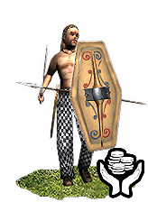
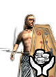
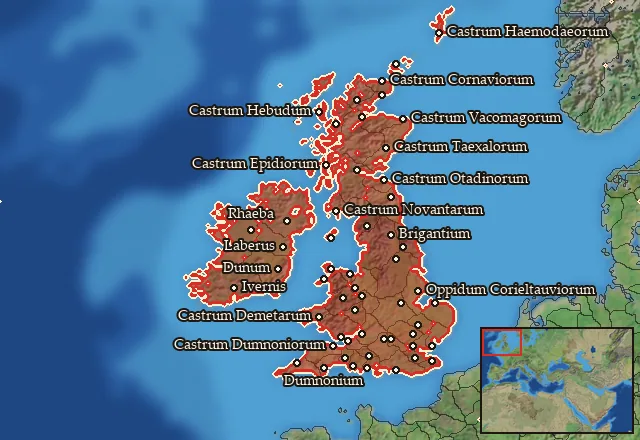

RTR: Imperium Surrectum
RTR: Imperium SurrectumMercenary Brittonic Swordsmen


Mercenary. Hired from a regional pool, not recruited from a building.
Class: light · Category: infantry · Men per unit: 60
Description
The Celts were excellent swordsmen and feared throughout Europe and the Mediterranean; they were at the forefront of any Celtic army and widely found as mercenaries. The Celts were "… madly fond of war, high spirited and quick to battle…" (Strabo, Geog., 4.4.2).
Stats
| Rank in roster | Rank in roster | Rank in roster | Rank in roster | ||||||||
|---|---|---|---|---|---|---|---|---|---|---|---|
| Men per unit | 60 | █████████· 88% | Attack | 10 | ███······· 27% | Charge bonus | 4 | ██········ 21% | Defence | 21 | ██········ 22% |
| · armour | 1 | █········· 0% | · defence skill | 15 | ██········ 24% | · shield | 5 | ██████···· 58% | Morale | 7 | █········· 11% |
| Discipline | Impetuous (may charge without orders) | Training | Untrained | Upkeep per turn | 562 dn | ███······· 31% |
Weapons
| Primary | Secondary | Primary | Secondary | Primary | Secondary | Primary | Secondary | ||||
|---|---|---|---|---|---|---|---|---|---|---|---|
| Attack | 10 | 9 | Charge bonus | 4 | 9 | Type | thrown · blade | melee · blade | Damage | piercing | slashing |
| Projectile | javelin | — | Range | 50 | — | Ammunition | 2 | — | Properties | Used just before charging into combat | — |
Defence
| Primary | Secondary | Primary | Secondary | Primary | Secondary | Primary | Secondary | ||||
|---|---|---|---|---|---|---|---|---|---|---|---|
| Total | 21 | — | Armour | 1 | — | Defence skill | 15 | — | Shield | 5 | — |
Condition and terrain
| Hit points | 1 | Ground: scrub / sand / forest / snow | 0 / 0 / 0 / 0 | Charge distance | 30 | Formations | Square |
Technical stats
| Time between blows (primary / secondary) | 2.5 s / 2.5 s | Extra fatigue in hot climates | 0 | Collision mass per man (1.0 is normal) | 0.91 | Spacing between men: close / loose | 1.1 × 1.3 m / 2.2 × 2.6 m |
| Default ranks | 5 |
In battle: Can hide in long grass · Can sap · Very good stamina
Where to hire it
Mercenaries are hired from a regional pool, not recruited from a building. This unit is offered by 1 pool covering 55 regions, at 2,588 dn to hire and 0 experience.

At least one of those pools sells to any faction that has an army in range — no faction restriction.
The 55 regions where this unit appears in a mercenary pool
Brigantia · Brigantia Centralis · Brigantia Orientalis · Caledonia · Cantiacia · Cantiacia Orientalis · Carnonacaea-Ceronia · Catuvellaunia · Catuvellaunia Occidentalis · Catuvellaunia Orientalis · Corieltauvia · Corieltauvia Orientalis · Cornavia · Cornovia · Cornovia Meridionalis · Damnonia · Deceanglia · Demetaea · Dobunnia · Dobunnia Meridionalis · Dumnonia · Dumnonia Meridionalis · Dumnonia Occidentalis · Durotrigia · Durotrigia Centralis · Durotrigia Occidentalis · Durotrigia Orientalis · Ecenia · Epidia · Haemodae · Hebudes · Ituna Aestuarium · Ivernia Centralis · Ivernia Meridionalis · Ivernia Occidentalis · Ivernia Orientalis · Ivernia Septentrionalis · Lugia-Decantaea · Mona · Monaodea
…and 15 more.